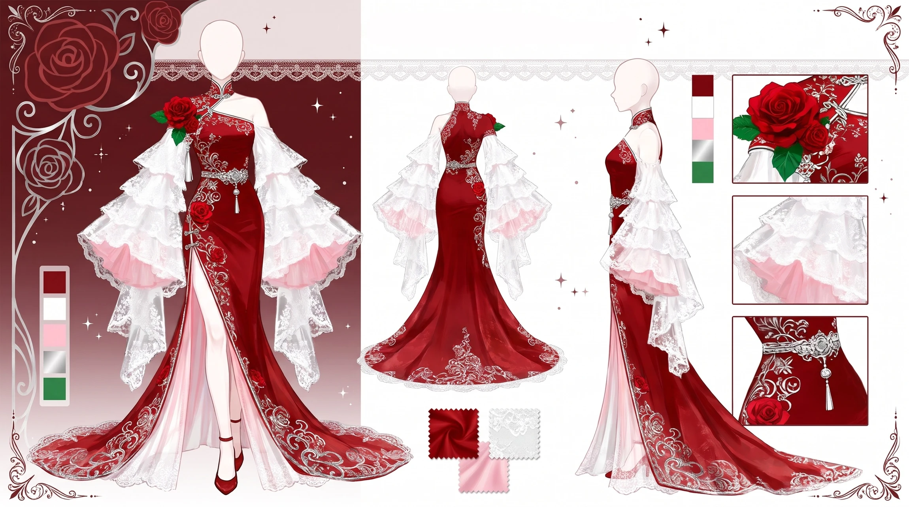
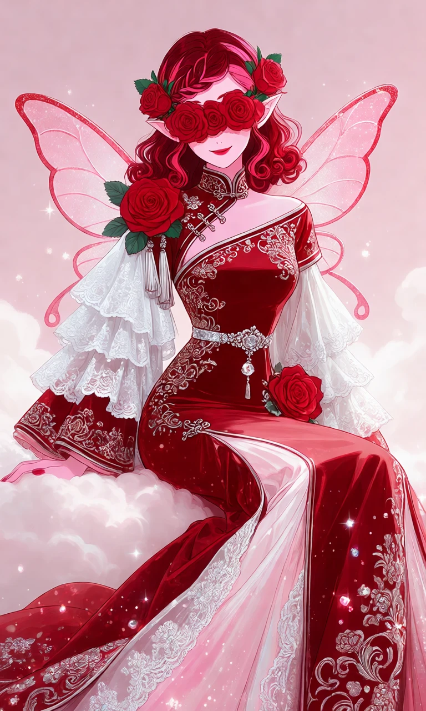
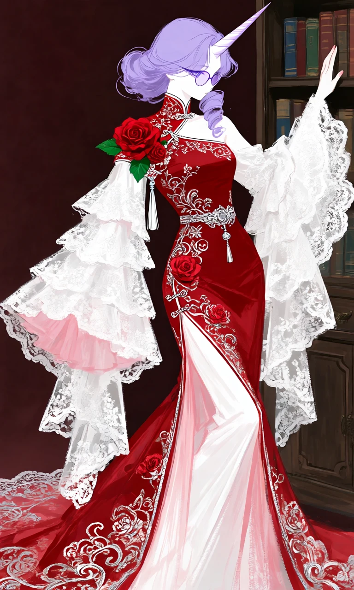

Scarlet Rose Filigree

Outfit Prompt
Outfit: Aesthetic: Elegant fusion of traditional Chinese qipao/cheongsam (high collar, side closures, embroidery motifs) and modern Western fantasy ballgown. It has a sensual yet regal feel, perfect for formal events, weddings, or cosplay.
Silhouette: Slim-fitting through the bodice and hips (mermaid-style), then dramatically flaring into a full, flowing skirt with a long train. High double side slits add movement and leg visibility.
Color Palette: Dominant deep crimson/red.
Accents in pure white (lace overlays) and soft blush pink (inner lining and gradients on the train). Metallic silver/white embroidery and embellishments.
Neckline & Shoulders:
Classic high mandarin collar with intricate red and silver detailing. Asymmetrical one-shoulder design: The right shoulder features a large, realistic red rose with green leaves as a focal embellishment. A decorative tassel hangs from it. The left shoulder is more open, with fabric draping across the chest in true qipao fashion. Subtle silver floral embroidery scatters across the upper chest.
Sleeves:
Highly dramatic and layered bell sleeves. Outer layer is red with silver embroidery, while the inner/overlay is flowing white lace that cascades down in multiple ruffled tiers. The sleeves are asymmetrical — the right side is slightly more covered, while the left shows more of the white lace drape. Tassels hang from the shoulder area, adding movement.
Bodice & Waist:
Fitted bodice with delicate silver floral and cloud-pattern embroidery (traditional Chinese motifs). A sparkling silver waist belt/ornament with a central pendant sits at the natural waist, accentuating the figure. Additional red rose embellishment at the hip on the right side.
Skirt & Train:
Floor-length with high slits on both sides, revealing the white/pink lining underneath. The skirt flows into a beautiful train that spreads out gracefully. Rich silver embroidery featuring flowers, clouds, and swirling patterns throughout the red fabric. White lace borders and overlays on the edges of the train create a soft, ethereal contrast.
Outfit Examples



